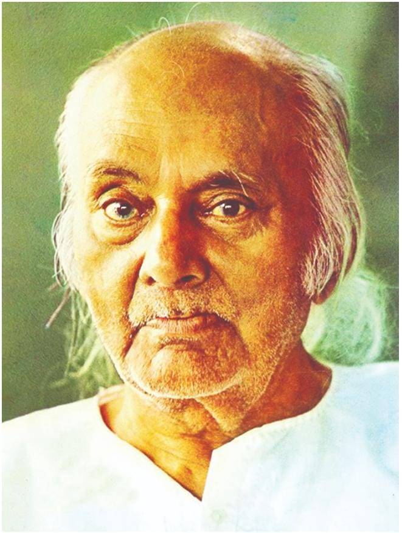

kazi Nazrul Islam is the national poet of Bangladesh who is especially recognized as a Bidrohi Kobi (rebel poet) around the country. Nazrul is a famous poet Nazrul's writings deal with the revolution of that period of the Britsh government. His revolutionary attempt helped him to be a national poet of Bangladesh. He has raised his voice against any kind of fascism and oppression and got popularity swiftly around the Indian Subcontinent.
Awesome Writer
Nazrul's writings explored themes such as love, freedom, humanity, and revolution. He opposed all forms of bigotry and fundamentalism, including religious, caste-based and gender-based. Throughout his career, Nazrul wrote short stories, novels, and essays but is best known for his songs and poems. He pioneered new music forms such as Bengali ghazals. Nazrul wrote and composed music foe nearly 4,000 songs (many recorded on HMV and gramophone records), collectively known as Nazrul Geeti.

"Love has no meaning or amount."-Kazi Nazrul Islam